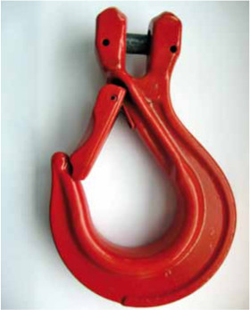
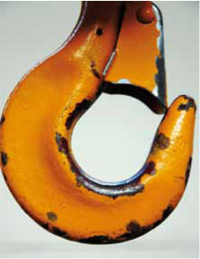
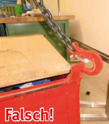
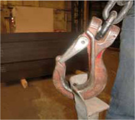
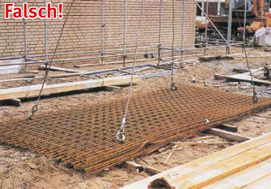
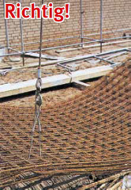

Schwer wiegende Unfallgefahren entstehen beim unbeabsichtigten Aushängen des Anschlagmittels aus dem Kranhaken und beim unbeabsichtigten Lösen des Anschlagmittels von der Last.
Nach dem Anhang 1 Abs. 2.5 der Betriebssicherheitsverordnung muss jedes Arbeitsmittel, von dem eine Gefahr durch herabfallende oder herausschleudernde Gegenstände ausgeht, mit Schutzvorrichtungen gegen diese Gefahren versehen sein.
Grundsätzlich ist eine Sicherung gegen das unbeabsichtigte Aushängen der Anschlagmittel oder der Lastaufnahmemittel aus dem Kranhaken notwendig (Bilder 16-1 und 16-2).

Bild 16-1: Gabelkopfhaken mit Sicherung

Bild 16-2: Hakensicherung
Entsprechend dem Einsatz ist sowohl am Kranhaken als auch am Anschlaghaken eine stabile Hakensicherung erforderlich.
Der Einsatz zweier unabhängiger Anschlagmittel in einem Kranhaken mit Neigungswinkeln über 45° bis 60° ist zu vermeiden, wenn durch die Hakenform bedingt das vorderseitige Anschlagmittel zur Hakenspitze hochwandern kann und Schäden am Haken und an der Hakensicherung zu befürchten sind.
Nur wenn das unbeabsichtigte Aushängen verhindert ist oder wenn wegen besonderer Gefahren beim Aushängen z. B. heißer Lasten die Sicherung stören würde, dürfen Haken ohne Sicherung verwendet werden.
Bei der Verwendung starrer Lastaufnahmemittel, wie Zangen, C-Haken oder kurzen, steifen Stahldrahtseilen, kann durch eine zu tiefe Bewegung des Kranhakens das Anschlagmittel heraus rutschen (Bild 16-4).

Bild 16-4: Haken rutschen bei Schlaffketten aus den Ösen
Von einigen Herstellern werden verschiedene Bauarten von Haken, die nach dem Einhängen nicht mehr herausrutschen können, angeboten. Im Baubetrieb sowie beim Stahlbau und beim Schiffbau sind diese Haken zwingend vorgeschrieben.
Kettenverkürzungsklauen ohne Sicherung können im entlasteten Zustand auf dem Boden liegend die Kette frei geben. Es sind möglichst verriegelbare Kettenverkürzungsklauen zu benutzen. Neu gelieferte Kettenverkürzungsklauen müssen verriegelbar sein; Altbestände dürfen zwar aufgebraucht werden, aber immer, wenn unbeabsichtigtes Herausrutschen zu befürchten ist, sind unverriegelte Klauen zu ersetzen. Ausnahmen bilden Klauen mit einem sehr tiefen Schlitz, sodass die Kette nicht herausrutschen kann. Siehe auch DIN 5692.
Vor jedem Hub muss man sich vergewissern, dass die Kette richtig sitzt.
Haken müssen so in die Anschlagpunkte oder Ösen der Last eingehängt werden, dass sie bei Schlaffseil oder Schlaffkette nicht aus den Ösen rutschen können.
Dazu wird die Hakenspitze von innen nach außen durch die Öse gesteckt (Bild 16-3).

Bild 16-3: Haken von innen nach außen stecken. Noch besser ist: Haken mit Sicherung verwenden
Soweit bei Verwendung von Anschlagketten infolge von Schlaffkette die Gefahr des unbeabsichtigten Aushängens besteht, müssen auch hier Lasthaken mit Sicherungsklappen verwendet werden.
Haken dürfen nicht durch zu kleine Ösen gezwängt werden: Die freie Beweglichkeit muss erhalten bleiben, damit der Haken in seinem Maulgrund und nicht etwa auf der Spitze belastet wird; er rutscht dann zu leicht ab oder wird aufgebogen.
Es wird empfohlen, an Maschinen und Teilen, die häufig transportiert werden sollen, Anschlagpunkte zu befestigen, um dem Ösenhaken eine sichere Befestigungsmöglichkeit zu geben. Diese Anschlagpunkte werden von verschiedenen Herstellern sowohl in schraubbarer Ausführung als auch in Anschweißausführung geliefert.
Auf jeden Fall ist es verboten, unter die Umschnürung der Last zu fassen (Bild 16-5). Die Rödeldrähte, mit denen Baustahlmattenpakete oder Bewehrungselemente im Baugewerbe zusammen gehalten werden, sind keine Anschlagpunkte. Für diesen Zweck verwendet man entweder spezielle Baustahlmattenhaken oder kurze Drahtseilstropps, die durch das Gewebe hindurchgesteckt werden (Bild 16-6).

Bild 16-5: Einhängen in die Umschnürung ist lebensgefährlich!
Beim Transport von Halbzeugen in Bündeln ist darauf zu achten, dass keine Stücke mit Unterlänge herausrutschen können oder lose auf dem Bündel liegen. Ebenso ist es nicht zulässig, lose Teile auf der Last zu transportieren. Falls beim Transport die Last irgendwo anstößt, können diese Teile herunterfallen. Bereits geringe Gewichte können dann lebensgefährlich wirken.
Wenn Hebeklemmen zum Transport von Blechtafeln verwendet werden, ist darauf zu achten, dass sie vor dem Transport verriegelt werden. Der Greifbereich dieser Klemmen ist auf dem Typenschild angegeben. Nur im angegebenen Greifbereich ist der Transport mit Blechhebeklemmen zulässig.
Hebeklemmen dürfen nur bestimmungsgemäß verwendet werden. Das bedeutet, dass jeweils nur eine Blechtafel bzw. ein Stahlprofil angeschlagen werden darf. Werden z. B. zwei oder mehrere Blechtafeln mit Hebeklemmen gleichzeitig angeschlagen, besteht die Gefahr des Lastabsturzes.

Bild 16-6: Baustahlmattenhaken oder diese kurzen Durchsteckseile sind die richtige Methode!